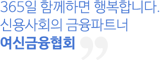

인사말

우리 협회 홈페이지의 방문을 진심으로 환영합니다.안녕하십니까? 여신금융협회 회장 김근수입니다.
1998년 설립된 여신금융협회는 신용카드업, 시설대여업, 할부금융업, 신기술사업금융업을
영위하고 있는 여신전문금융회사를 회원으로 하는 비영리 사단법인입니다.
우리 협회는 급변하는 금융환경 변화에 능동적으로 대응하면서 금융당국과 회원사, 금융
소비자 사이의 조정자 역할을 충실히 수행함으로써 여신금융업이 창조경제 발전 및 서민
금융지원에 기여할 수 있도록 최선을 다하고 있습니다.
아울러 여신금융회사가 금융소비자의 권익을 보호하고 보다 양질의 서비스를 제공할 수
있도록 금융환경을 개선하고 사회공헌활동도 지속적으로 충실히 해나가겠습니다.
또한 협회는 홈페이지를 통해 업계 현황 및 통계, 소비자보호를 위한 공시 및 민원신고·
접수 등 다양한 정보를 제공하고 있으니 많은 이용을 부탁드립니다.
감사합니다.